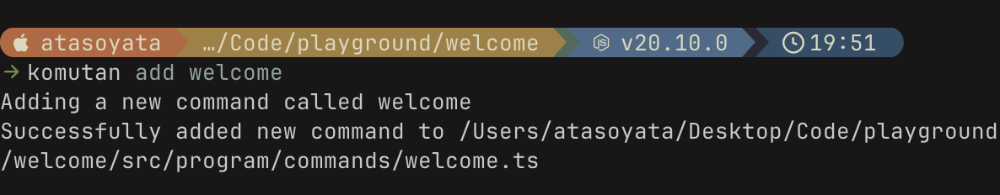

Introduction
I was playing with CLI tools and thought it would be cool to make one and publish it. While I was searching for tech to use, I saw cobra and cobra-cli in Go, which is absolutely perfect. After playing with it for some time, I decided to make CLI tools also in TypeScript, but I had a hard time finding good resources, so here we are with komutan.
What is Komutan?
Komutan is a CLI toolkit on top of commanderjs that streamlines the process of creating, developing, testing, and publishing CLI apps.
Getting Started
Make sure that you have node and npm on your system, and then you can just install komutan with a simple command:
npx komutan
Tutorial
In this tutorial, let's create a simple CLI tool that welcomes a given name. Let's create a new directory:
mkdir welcome
cd welcome
After making sure that you are in the welcome directory, run the komutan init <name> command:
npx komutan init welcome
This will scaffold your CLI app. You can see the project tree on GitHub.

Now let's test our CLI:
npx komutan test # you may need to add sudo
welcome

By default, you will have a hello command. Let's try that:

Perfect! Everything is working. Now let's add a welcome command and modify it.
You can add a new command by using the komutan add <name> command:
npx komutan add welcome

Now let's make it accept a name:

Run the test command again:

And now use it:

Here it is - everything is working fine!
Now the last step: you will probably want to publish your CLI, and it is as easy as running:
npx komutan publish # you may need to use sudo
Conclusion
Done! You now know how to ship CLI apps like crazy.